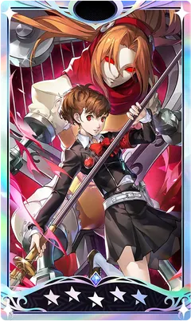

KOTONE Kotone Shiomi
Fonte: https://lufel.net/en/character/kotone/ · letto il 2026-11-14 con il browser integrato (spoiler attivi) · Stato Global: rilasciata (uscita simultanea Asia/Global). Convenzione: nomi di skill, awareness, armi, Persona, set e stat lasciati in inglese come su lufel.net; condizioni ed effetti tradotti in italiano. Valori skill = LV10 / LV10+Minds 5 / LV13 / LV13+Minds 5 (la pagina ha anche una scheda "Sync Mindscape", non estratta). Valori armi = refinement R0/R1/R2/R3/R4/R5/R6.
Scheda#
| Campo | Valore |
|---|---|
| Nome | Kotone Shiomi |
| Codename | KOTONE (lufel mostra "S.E.E.S" al posto del codename) |
| Persona | Orpheus |
| Rarità / tipo | 5★ · Limited (collaborazione P3P) |
| Elemento | Fire |
| Posizione | Strategist |
| Ruolo (lufel) | non indicato |
| Tag (lufel) | nessuno |
| Resistenza / Debolezza | Res: Fire · Wk: Curse |
Character Review (lufel)#
- Kotone Shiomi è una support Fire uscita come parte della collaborazione P3P.
- È uscita simultaneamente sui server Asia e Global per celebrare il 2.5º anniversario di P5X Asia e il 30º anniversario della serie Persona, segnando la sua prima apparizione ufficiale con modello 3D HD.
- Sulla precedente uscita Asia sono stati fatti aggiustamenti di Sync Mindscape per tenere conto delle differenze di prestazioni, come per i precedenti personaggi a uscita simultanea.
- Usando ripetutamente la Skill 1 alza i rank di Powerful Bond e Lunar Bond del DPS principale, costruendo buff più forti nel tempo.
- La Skill 3, Lunar Phaseshift, ha una meccanica unica: copia, con una percentuale fissa, i buff che un altro membro del party ha concesso al DPS principale.
- Non può però copiare i debuff applicati ai nemici (danno subito aumentato, Defense ridotta). Kotone compensa con buff propri consistenti, incluso un forte buff di Pierce.
- La skill speciale Go for Broke anticipa i suoi 2 turni successivi, concedendo 2 turni extra per agire 3 volte in totale; poi non può agire per i 2 turni seguenti.
- Fortune: entrando in questo stato ottiene 2 azioni extra. Al termine dello stato, l'alleato in Arcana Link attiva il proprio Highlight o Theurgy. Dopo, Kotone entra nello stato Sick per 2 turni e non può agire.
Pro - Può copiare, con percentuale fissa, i buff ricevuti dal DPS principale. - Fornisce Final Damage Amplification semplicemente se posseduta.
Contro - Meno efficace nei team orientati ai debuff o costruiti attorno a effetti unici non copiabili.
Recommended Setup (lufel)#
Nota lufel: le impostazioni consigliate sono basate su contenuti futuri; alcune funzioni potrebbero non essere ancora disponibili (Revelation, Mindscape, ecc.).
- Revelation — Space: Nativity (tooltip "Nativity - Strife": all'inizio della battaglia o all'inizio di un'azione extra, aumenta il danno critico del party del 10%; permanente, cumulabile fino a 2 volte) · oppure Creation (tooltip "Creation - Reconcilation": all'inizio della battaglia aumenta del 12% il DMG inflitto dall'alleato con la SPD più bassa, non cumulabile) · oppure Trust (tooltip "Trust - Prosperity": quando usa skill sugli alleati, il danno di tutti i membri del party aumenta dell'8% per 2 round) · Sun/Moon/Star/Sky: Strife (2-Set: danno Fire +10% · 4-Set: Attack +15%; se il nemico è debole al Fire, Attack +15% aggiuntivo) · oppure Reconcilation (2-Set: Speed +6 · 4-Set: in combattimento HP, ATK e DEF +15%) · oppure Prosperity (2-Set: danno subito -8% · 4-Set: entrando in battaglia recupera subito il 25% della carica HIGHLIGHT, non cumulabile)
- Main Options — Sun: HP · Moon: Attack / Damage Mult · Star: Crit Rate · Sky: Attack
- Sub Options — 1ª priorità: Attack · 2ª: Crit Rate / Pierce Rate · 3ª: Crit Mult / Damage Mult
- Recommended Stats — LV10: Attack 4684 · LV10+Minds 5: Attack 5164 · LV13: Attack 4972 · LV13+Minds 5: Attack 5452
- Battle Entry + — Thieves Den 50LV +65 · Thieves Den 70LV +110 (o più) · Thieves Den Rating · Eludi. Stat Buff
- Priorità skill — 1º Skill 1 · 2º Skill 3 · 3º Highlight · 4º Skill 2 (tutte MAX)
- Mindscape (LV 5) — Rank Strengthening 1: Attack 20% · Rank Strengthening 2: Damage Reduction 16% · Skill Enforce 1: Skill1 / Skill3 · Skill Enforce 2: Skill2 / HIGHLIGHT
- Skill Rotation — lufel usa tabelle interattive per A0 / A1 / A2 / A6, in versione Standard (6 turni) e Miku (8 turni), con righe "Active buffs". Tabelle leggibili nel testo estratto (turni 1-6): (a) 1 › 1+1+3 › Fatigue › Fatigue › 1 › 3 · (b) 1 › 1 › 1 › 1 › 1+3+2 › Fatigue · (c) 1 › 1 › 1 › 1 › 1+1+3 › Fatigue. Per l'attribuzione esatta alle schede A0/A1/A2/A6 consultare la pagina.
- Notes (lufel) — Le rotazioni consigliate sono ancora in fase di aggiustamento dopo l'uscita iniziale · Lo sfondo rosa segna il turno in cui si attiva Go for Broke, mentre le righe Powerful Bond e Lunar Bond mostrano gli stack correnti · I puntini accanto a S1 e P1 mostrano il conteggio stack di ciascuna skill · Nelle rotazioni Miku a 8 turni, al turno 2 si può usare la Skill 3 al posto della Skill 1 se il party ha abbastanza buff · Le rotazioni Miku a 8 turni usano Miku come Elucidator; la sequenza può cambiare in base a quando usa Ghost Rule
Skills (LV10 / LV10+Minds 5 / LV13 / LV13+Minds 5)#
Skill 1 — Lyre's Melody (SP 20) In base all'Attack di Kotone (fino a 4684/5164/4972/5452), aumenta il danno critico (Crit Mult) di 1 alleato fino al 19.5%/21.5%/20.7%/22.7% per 3 turni; cumulabile fino a 3 volte. Se il bersaglio principale è in stato Arcana Link, concede 1 stack di Powerful Bond (3 turni, massimo 3). Quando Kotone è presente, in base al totale degli stack concede al bersaglio: 1: Attack +39.0%/43.0%/41.4%/45.4% · 2: Pierce Rate +14.6%/16.1%/15.5%/17.0% · 3: Final Damage Amplification +4.9%/5.4%/5.2%/5.7%. In stato Fortune, estende di 2 turni la durata dell'effetto di questa skill.
Skill 2 — Burning Moon's Cry (SP 20) Infligge danno Fire a tutti i nemici pari al 53.9%/59.4%/57.2%/62.7% dell'Attack (3 colpi). Se i nemici sono meno di 5, aumenta il danno del 25% per ogni nemico in meno. Se l'alleato in Arcana Link ha 3 Powerful Bond, in base all'Attack di Kotone (fino a 4684/5164/4972/5452) aumenta il danno subito da tutti i nemici fino al 29.3%/32.3%/31.1%/34.1% per 1 turno. In stato Fortune, aumenta il danno di questa skill di un ulteriore 292.8%/322.8%/310.8%/340.8% ed estende la durata di 2 turni; inoltre riduce di 2/2/2/2 i Down Point di tutti i bersagli colpiti, indipendentemente dalle affinità.
Skill 3 — Lunar Phaseshift (SP 22 · cooldown 2 turni, azioni extra escluse) In base all'Attack di Kotone (fino a 4684/5164/4972/5452), aumenta l'Attack del party fino al 29.3%/32.3%/31.1%/34.1% per 1 turno. Se il bersaglio principale è un alleato senza stato Arcana Link (esclusa Kotone), copia sull'alleato in Arcana Link gli effetti di certi buff concessi dal bersaglio, con un moltiplicatore di copia del 30.0%/30.0%/30.0%/30.0% della loro efficacia originale; durano 1 turno e certi effetti non possono essere copiati. In stato Fortune, estende di 1 turno la durata dell'effetto.
Highlight (cooldown 4 turni) Aumenta il danno critico (Crit Mult) del party del 19.5%/21.5%/20.7%/22.7% e inoltre l'Attack dell'alleato in Arcana Link del 24.4%/26.9%/25.9%/28.4% per 2 turni. In stato Fortune, estende la durata di 2 turni.
Passiva — Leader's Guidance: quando concede buff agli alleati, aumenta l'Attack del bersaglio principale del 9.0% per 3 turni; cumulabile fino a 3 volte.
Passiva — Clean Sweep: quando viene concesso Powerful Bond, aumenta il Pierce Rate del bersaglio del 12.0% per 2 turni.
Awareness#
- A0 — Moment of Truth (talento base): dopo aver ottenuto Kotone, in battaglia, per ogni Strategist presente (inclusa la Persona equipaggiata da Wonder) aumenta la Final Damage Amplification del party dell'1% (vale anche se Kotone non è in battaglia). All'inizio della battaglia concede lo stato Arcana Link all'alleato Sweeper o Assassin con l'Attack più alto; all'inizio del proprio turno Kotone può riselezionare il bersaglio dell'Arcana Link. Più alleati non possono essere in Arcana Link contemporaneamente. Quando l'alleato in Arcana Link usa una skill, o quando Kotone usa una skill su di lui, aumenta il suo Lunar Bond (max 10); in base al Lunar Bond corrente: 1: Attack +50% · 5: Pierce Rate +15% · 10: danno critico (Crit Mult) +50%. Riselezionando il bersaglio dell'Arcana Link, il Lunar Bond si azzera. Inoltre Kotone può attivare Go for Broke una volta per battaglia: all'attivazione entra nello stato Fortune.
- A1 — Echoing Strings: entrando nello stato Fortune, attiva immediatamente 1 volta l'Highlight senza consumare la barra Highlight. Quando concede lo stato Arcana Link a un alleato, gli concede 1 stack permanente di Powerful Bond finché resta in Arcana Link e porta il Lunar Bond a 5. Se un alleato ha 3 stack di Powerful Bond dopo aver ricevuto Lyre's Melody, aumenta ulteriormente il suo danno critico del 30% per 5 turni.
- A2 — Team Mom: in stato Fortune, estende di 1 turno in più la durata di tutti gli effetti concessi dalle skill e dall'Highlight di Kotone. Inoltre il moltiplicatore di copia di Lunar Phaseshift viene moltiplicato per 1.25.
- A3 — Full Moon Night: aumenta i livelli di skill di Lyre's Melody e Combat Tactics (lufel non indica il valore; di norma +3).
- A4 — Eternal Bonds: Highlight Enhanced: aumenta il danno del party del 25% per 2 turni.
- A5 — Unquenchable Flames: aumenta i livelli di skill di Burning Moon's Cry e Lunar Phaseshift (lufel non indica il valore; di norma +3).
- A6 — Song of the Soul: Go for Broke può essere usato 1 volta in più. Quando usa Lunar Phaseshift su alleati diversi da Wonder, se Wonder non è in Arcana Link, copia sull'alleato in Arcana Link anche gli effetti di certi buff concessi da Wonder, con un moltiplicatore di copia della loro efficacia originale; durano 1 turno e certi effetti non possono essere copiati.
Stats#
- Base (LV1): HP 304 · ATK 96 · DEF 56 · Speed 100
- Hidden Ability LV7: ATK % 29%
- LV80 (HP / ATK / DEF): A0 3420 / 1080 / 633 · A1 3482 / 1099 / 645 · A2 3543 / 1119 / 657 · A3 3605 / 1138 / 668 · A4 3666 / 1158 / 679 · A5 3728 / 1178 / 690 · A6 3790 / 1197 / 702
Armi esclusive (valori R0/R1/R2/R3/R4/R5/R6)#
5★ Vetri Vel Muruga — HP 2259 · ATK 714 · DEF 418 - Aumenta l'Attack del 30.0%/30.0%/39.0%/39.0%/48.0%/48.0%/57.0%. - Quando l'alleato in Arcana Link raggiunge Lunar Bond 5 o superiore, ottiene Skill Amplification pari al 10.0%/13.0%/13.0%/16.0%/16.0%/19.0%/19.0%. - Quando un alleato ha Powerful Bond, aumenta il suo danno critico (Crit Mult) del 6.0%/7.8%/7.8%/9.6%/9.6%/11.4%/11.4% per ogni stack.
4★ Ame-no-Nuboko — HP 1808 · ATK 571 · DEF 335 - Aumenta l'Attack del 12.0%/12.0%/16.0%/16.0%/20.0%/20.0%/24.0%. - Quando concede buff, aumenta l'Attack di Kotone del 7.3%/9.6%/9.6%/11.9%/11.9%/14.2%/14.2% per 3 turni; cumulabile fino a 3 volte.
Attribute Mindscape (lufel: introdotto in KR V5.2, forse non ancora su Global)#
- Mindscape Synergy — Attack Increase (consigliata): aumenta l'Attack del 10.0%/20.0%.
- Mindscape Combat Skill — nessuna consigliata da lufel (slot vuoto, "Click to select").
Recommended Combination (lufel)#
- Sezione non presente nella pagina lufel di questo personaggio.
Recommended Parties (lufel)#
- Lineup — JOKER·Starlight: usa il [Coordinated Damage] della Skill 3, che concede buff agli alleati sfruttando anche i valori dei buff copiati da Kotone. · J&C: Kotone può copiare e concedere il valore di Skill Effect Amplification che un alleato riceve da J&C. · MARIAN·Beachflower: concede agli alleati buff che Kotone può copiare. · TURBO: concede agli alleati buff che Kotone può copiare. · WIND·Tempest: concede agli alleati buff che Kotone può copiare. · CHORD: concede agli alleati buff che Kotone può copiare.
- Party d'esempio — non elencati nella pagina lufel (solo Lineup).
Nomenclatura#
- lufel: "Kotone Shiomi" (codename KOTONE), slug URL
kotone. Stati/risorse: Arcana Link, Powerful Bond, Lunar Bond, Go for Broke, Fortune, Sick. Combat Tactics / Thief Tactics = livello dell'Highlight. - Nelle descrizioni lufel "critical damage" = Crit Mult.